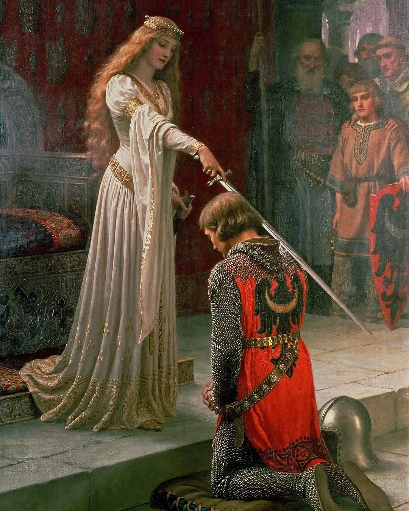

The painting depicts a medieval scene where a queen is in the act of knighting a kneeling warrior. The knight, dressed in chain mail with his helmet beside him, kneels in submission and fealty as the regal lady gently taps the flat side of her sword on his shoulder, symbolizing his formal investiture as a knight. An audience, including a flag bearer (likely the knight’s squire) and other witnesses, observe the ceremony. Historically, the painting is thought to portray Eleanor of Aquitaine conferring knighthood on her son, Richard the Lionheart. In traditional medieval contexts, knighthood was a male-dominated institution, with men conferring titles upon other men to reinforce patriarchal structures. By placing a woman in the position of power, wielding the sword and granting knighthood, Leighton elevates her to a role of significant authority and agency, which was uncommon in both historical reality and the romanticized medieval narratives of the time. This inversion suggests a female figure as the arbiter of honor and status, challenging the gendered hierarchy typically seen in such scenes. The architectural elements, like the stone walls and Gothic arches, bring out the feeling of a medieval castle or great hall aligning with the historical context of knighting ceremonies. The assembly of courtiers and attendants, including a squire holding a flag, highlights the public and formal nature of such rituals, emphasizing the ceremony's significance. The presence of heraldic symbols and banners in the background supports the medieval setting, reflecting the importance of lineage and allegiance in chivalric culture.